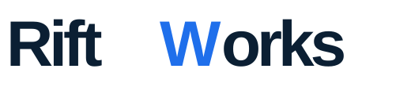
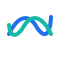

Wordmark-led + Señal de retorno.
Un sistema tipográfico principal, una firma auxiliar de convergencia y reglas suficientes para presentar, comunicar y producir la marca sin volver a abrir la exploración.


La palabra primero. La señal después.
El wordmark es la identificación verbal. Señal de retorno aparece como firma auxiliar, nunca como sustituto obligatorio del nombre.


Cuatro tonos, una jerarquía.
Signal Blue identifica el acento tipográfico; Coast Teal identifica la respuesta. Deep Navy sostiene autoridad y Cloud White mantiene respiración.
Precisión técnica, lectura humana.
Manrope para titulares y wordmark; Inter para lectura funcional; IBM Plex Mono para metadatos, folios y lenguaje técnico.
La palabra es el activo más reconocible: exacta, sobria y capaz de vivir sin un símbolo adjunto.
05 / RETURN
SIGNAL
ACTIVE SYSTEM
Lo que se sostiene en cada formato.
Estas reglas son la barrera contra variaciones accidentales en presentaciones, correo, documentos y producto.
Wordmark como origen
Usar RiftWorks completo en la primera mención y en todos los documentos externos.
Firma como apoyo
Usar Señal de retorno junto al nombre o como marca de cierre; nunca convertirla en un monograma.
Una unidad de aire
Mantener como mínimo una unidad equivalente al grosor del trazo alrededor de la firma completa.
No separar el cruce
Las ondas deben conservar su solapamiento central y el orden Signal Blue / Coast Teal.
No decorar
No añadir degradados, flechas, globos, grietas, marcos ni efectos que compitan con la señal.
Contraste primero
En fondos complejos, usar la versión monocromática aprobada o una superficie Cloud White.
Listo para revisar como sistema.
La decisión pendiente ya no es conceptual. El otro fundador puede aprobar el conjunto: wordmark, firma, color, tipografía, motion, correo y documentos. Después del visto bueno solo queda producción final y revisión de similitud marcaria.
Revisar animación